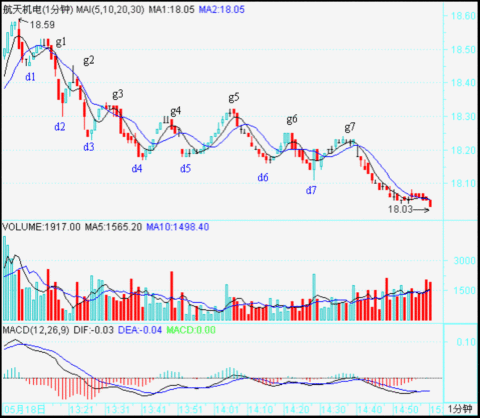

0535 - 教你炒股票54：一个具体走势的分析¶
日期：(2007-05-24 01:37:31) 分类：[时政经济（缠中说禅经济学）]
今天本不该说股票，连续两天都说股票也太浪费资源，不过回帖里有人提出这个问题很有代表性，所以有必要回答一下。今天等着看足球，十分无聊，上网419，还不如把这帖子给写了，先贴出来，让等看球的先消耗点无聊的时间。
注意，看下面分析之前，不能太饿也不能太饱，不能太兴奋不能太不兴奋，否则一定晕。由于一般的图都没有这么复杂，所以看完之后千万别信心受到打击，而是应该信心百倍，知道只要精通本ID的理论，这么细微、古怪的图，都可以当下精确分析并指导操作，从而对本ID理论关于走势的绝对把握性有一个更清楚的认识。后面就是要多看图，多磨练的问题了。
如果概念不清，看到这样的图，基本都要晕头转向。好了，大家开始深呼吸，放松脑筋，别抽筋了。

这图有个条件，就是d1=g2，d2=g4。其实这条件有还是没有，并不影响分析，但有这些条件，就会增加分析的难度。这里，就从18.5元（设为g0）开始分析。
昨天刚好谈到，当你以某级别分析图形时，就先假设了次级别是线段。这图里，除了最后一个，其余每一个dngn、gndn+1都是1分钟以下级别的，所以都可以看成没有内部结构的线段。
我们就从g0开始，当下地进入图形中。显然，当下走到g1时，由于只有两段，所以不形成任何中枢，当然，如果你是一个分笔操作者，那么g1就构成一个第二类卖点了。当走势发展到d2时，一个1分钟级别的中枢就形成，区间是[d1,g1]。后面出现的线段，就要以该区间来决定是中枢震荡还是第三类买卖点。由于d1=g2，那么d2g2这段就属于[d1,g1]中枢的震荡。而到d3g3这段，显然已经不能触及[d1,g1]，所以g3就是第三类卖点。当然，如果前面d1>g2，那g2就是第三类卖点了。
其实，由于d1=g2，所以当行情发展到d3，就可以当下地用结合律对走势进行多样性分析。这时候，有如下等式：
g0g3=(g0d1+d1g1+g1d2)+d2g2+g2d3=g0d1+(d1g1+g1d2+d2g2)+g2d3
括弧里的是中枢。在后一式子看来，该中枢就是[d1，g2]，也就是一个价位，这时候，也并不影响前面关于g3就是第三类卖点的分析。而这种分解，比较符合一般的习惯，所以是可以采取的。
显然，以MACD辅助判断，力度上，g1d2 > g2d3 > g3d4,相对来说，后者都是前者的盘整背驰。当然，在1分钟图上，这种背驰都没有什么操作意义，但如果是日线、甚至年线图上，就有了。
分解图形，有一个原则是必须知道的：两个同级别中枢之间必须有次级别的走势连接，例如，g0d4= g0d1+(d1g1+g1d2+d2g2)+（g2d3,+d3g3+g3d4）这样的分解是不被允许的，因为括弧中的两个同级别中枢之间没有次级别的连接。（注意，这与下面三次级别构成中枢的情况不同，那种情况下，是允许三个括弧相加而之间没有次级别，因为那是扩展成高一级别中枢的情况，和这里两个同级别的情况不同。）
当行情当下走到d4点时，根据上面的原则，无非有下面两种可能的分解：
g0d4 = g0d1+（d1g1+g1d2+d2g2）+g2d3+d3g3+g3d4
= g0d1+d1g1+g1d2+（d2g2+g2d3+d3g3）+g3d4
d4g4是盘整背驰后的正常反弹，针对上面第一种分解，这只是第三类卖点后向一个新的同级中枢移动或形成更高级别中枢的一个中间状态，g4d5这段也是；针对第二种分解，由于g4=d2，所以d4g4是（d2g2+g2d3+d3g3）的中枢震荡，d5g5这段也是。
有人可能要问，在这种情况下，采取哪种分解？其实，哪一种都可以，但第一种，由于在中间状态中，没有一个确定的标准，所以对短线操作指导不足，而第二种，由于是中枢震荡，操作起来就指导明确了，所以从方便操作的角度，就可以用第二种。这就是反复强调的分解多样性的好处，一般来说，对于具体操作，一定要选择当下有明确意义的分解，例如是中枢震荡的，或有第三类买卖点的，但一定要注意，所有的分解必须符合分解的原则，否则就乱套了。
对于第二种分解，d5g5这段属于中枢震荡，但对于第一种分解，d5g5这段就有了一个重大的意义。因为那种第三类卖点出现后的中间状态，在d5g5这段出现后就彻底消除了，一个更大级别的中枢就给确定了。具体如下：
g0g5 = g0d1+{（d1g1+g1d2+d2g2）+（g2d3+d3g3+g3d4）+（d4g4+g4d5+d5g5）}
三个小括弧里的1分钟中枢重叠构成了大括弧里的5分钟高一级别中枢。中枢的区间是[d2，g5]，注意，这时候，就要把1分钟的走势当成线段，小括弧里的都是线段，高低点就是这线段的端点。这样一来，后面的走势就十分简单了，例如，g7就是一个第三类卖点（d7g7，其中2、3根K线有一个较大的回试，然后有5、6两个小十字星停在该区域，由此就知道这肯定构成1分钟中枢了，也就是内部可以画出一个1分钟以下级别的三段来，当然，具体的如果有1分钟以下图看就可以把握，特别对于级别大的图，这些时候都可以看小级别的图去确认，如果经验多的，一般看到这种情况，不用看小级别的都知道这么回事情。）
按照第二种分解，相应的5分钟中枢要到g6点才完成，这样g0g6 = g0d1+d1g1+g1d2+{（d2g2+g2d3+d3g3）+（g3d4+d4g4+g4d5）+（d5g5+g5d6+d6g6）}
相应的5分钟中枢区间就是[d3，g5]，在这种情况下，d7g7也是一个中枢震荡，但不构成第三类卖点，因为不符合条件。（为什么？本ID写了这么多，这么简单的问题，就当成作业请各位回答。）
注意，并不是说一定要形成该级别第三类卖点后才能大幅度下跌，完全可以用该级别以下小级别的第三类卖点就突破中枢，但有一点是肯定的，就是只要足够长时间，该级别的这第三类卖点一定会出现的，当然，在最极端的情况下，这个卖点离中枢很远的位置了，但有一点是肯定的，就是该卖点后一定继续向下。而上涨的情况相反，第三买点后一定继续向上，一个最好的例子就是600477在20070409日这个小级别的第三类买点，这买点离2月分的中枢很远了，但依然有效，而且还是在这么大监管的条件下，本ID的理论继续发挥作用，为什么？因为那些监管并没有破坏本ID理论成立的两个最基本的前提。还有的可以看600837在20070206的例子。至于暴跌的例子，现在很难找到，老一点的投资者应该都记得庄股跳水后，第一次反抽后再继续更大幅度下跌的例子，那就是第三类卖点。
必须注意，在这种大幅快速波动的情况下，一个小级别的第三类买卖点就足以值得介入。例如对一个周线中枢的突破，如果真要等周线级别的第三类买卖点，那就要一个日线级别的离开以及一个日线级别的反抽，这样要等到何年何月？因此，一个30分钟甚至5分钟的第三类买卖点都足以介入了。但这里有一个基本的前提，这种小级别的大幅突破必须和一般的中枢波动分开，这种情况一般伴随最猛烈快速的走势，成交量以及力度等都要相应配合。这种操作，如果理论把握不好，有一定风险，就是和一般的中枢震荡搞混了，因此理论不熟练的，还是先按最简单的来，例如对周线中枢的突破，就老老实实等周线的第三类买点。注意，卖点的情况，即使理论不熟练的，宁愿按小的来，因为宁愿卖早，决不卖晚。不过，对于大级别中枢来说，如果还要等到第三类卖点才卖，那反应已经极端迟钝了，那第一、二卖点去哪了？市场里可不能随地睡觉。
还有一种极端的例子，就是大幅度的中枢震荡，例如5分钟的中枢在10000元，最极端的，甚至可以次级别以下震荡到0.01元，又拉回来，即使连续跌停到0.01元，然后连续涨停到100000000元，再跌回来10000元，这也是5分钟的中枢震荡。当然，这么有病的例子也只能是理论中的，但由此可见本ID理论的涵盖面之广。所以中枢震荡的操作，一定是向上时力度盘整背驰抛，向下力度盘整背驰回补，而不是杀跌追涨，否则真出现这么有病的情况，那就真有病了。
关于追涨杀跌，如果在中枢震荡中，一定死定。但如果是在第三类买卖点后，却不一定，因为中枢的移动，并不一定恰好就是你买卖的位置就结束了，就算是，后面也还有中枢震荡出现，因此，在这种情况下追涨杀跌，也有活的机会，但这都不是长远之计，为什么有好好的第三类买卖点不用，一定要追涨杀跌？就算是追涨杀跌，也可以利用小级别的买卖点进去，为什么一定要瞎蒙？
回到上面的两种分解，其实这两种分解对于g7点来说，结论是一样的，而从MACD辅助看，这种两次拉回0轴都冲不上去的走势，而且第二次红柱子还面积小了，这种情况也预示者后面有麻烦。但多种分解，其实并不是什么麻烦事，反而是相互印证的好办法。不过一定要再次强调，分解必须符合规范，不能胡乱分解。
按严格标准说，如果你能熟练地，无论任何图形，都能当下快速地按以上标准来分解并指导操作，那么对于本ID理论的学习，就大致可以小学毕业了。不过这样可能对信心不足或学习时分析能力比较一般的人打击过大，所以为了鼓励大家，本ID决定向教育部门学习学习，也来一个扩招，达到这种水平的，都统一发本科毕业证书，又鉴于最近北大已经堕落到连孔男人、李男人之流都可以教授教授了，所以决定毕业证书都统一成北大牌的，一律免费，这样大家应该可以放心学习了。
废话少说，本ID要去夜宵夜宵，然后看球看球。
附录：
虽然今天本ID见到什么股票都想当AC给揍扁，但如果你学了上面的课程连今天的图都看不明白，那自己也要揍扁自己了。10点的第一卖点与1115的第二卖点，就和上面图上的g0\g1是一回事情，只是上面是1分钟以下级别的，而这是1分钟级别的。从1115到1412，就是第三段，从而构成一个大的5分钟中枢，第三段是一个典型的趋势，二个中枢，最后一段在1分钟图上标准的1分钟以下级别背驰（看其中MACD的绿柱子面积），后面的拉回，就是对这5分钟中枢的震荡。就这么简单，看不明白的，对着今天的分时图，和上面的图，请好好研究。
明白了上面，明天的走势就太简单了，就是关于这中枢的震荡直到出现第三类买卖点，就这么简单，简单得像昨天首发就应该是克劳奇，但竟然没有，你说是不是某些人脑子进水了。至于大的走势，就还是4129点的1/2线问题，一定要震荡给站住才谈论向上发展，这是一个大前提。
个股不想说什么了，千万别问本ID，今天635涨停究竟买不买。一定要在买点买，短线也是一样的。就像本ID那16只里前期最弱的998和343，998在3、4月分盘整的时候，无数人在叨唠，有那时间叨唠，还不如问自己，那盘整究竟是什么级别的第三类买点，然后去分析细部，找出启动的点。按照本ID的理论，3月30日的那个点根本就不难找，请看看日线下的MACD变化。其他个股也是一样的。343，3月份的盘整是什么？MACD刚回拉0轴就起来，这够标准没有？为什么有时间埋怨没时间研究？
有时间，请多研究，功夫是要花工夫的。
本文评论获取自靠谱的方式，包含疑似禅师的回复数量：[44]
UID:[1215172700] 昵称：缠中说禅 日期：(2007-05-24 01:41:04)
吃完夜宵回来，把帖子再发一次，刚才新浪有毛病，帖子发不好。
UID:[1215172700] 昵称：缠中说禅 日期：(2007-05-24 01:41:42)
把原来帖子的回贴转过来：
[匿名] 头大也得看 2007-05-24 00:28:04
晕，老大辛苦啊！！这都几点了，还在关心大家！！
[匿名] 头大也得看 2007-05-24 00:32:36
服啦！！这精神，还用二话不！！！！！
缠中说禅 2007-05-24 00:45:11
早上就不发帖子了，收盘再把解盘附录上。今天的新浪很有毛病，帖子发得有点累。先下，再见。
[匿名] 新浪网友 2007-05-24 00:56:31
夜猫子呀，以前就知道你凌晨还跑到孔肥肥和黎鸣那里帖帖子，这次怎么说呢？有暖流般的感动，祝一切顺利皆好！
UID:[1215172700] 昵称：缠中说禅 日期：(2007-05-24 01:42:09)
[匿名] 新股手 2007-05-24 01:03:14
沙发!我还在学习啊
[匿名] 替天行房 2007-05-24 01:07:32
老大早！
[匿名] 新股手 2007-05-24 01:11:41
反正前天钻进了139569,近期捂着,洗晕我也不出来.球我就不看了.先去宵夜,再上来连夜学.白天也懒得盯盘了,免得受不了洗,中了国民党的"美人计",当了浦自高。呵呵
[匿名] 大盘 2007-05-24 01:17:15
谢谢博主对我前日提问的走势截图进行具体的分析，大家应该抓住这个机会好好琢磨一下，如果觉得博主文章当中的图片不太清楚，可以直接访问以下链接的原图，或者参考600151在5月18日从13.07到收盘时1分钟图表的k线图www-itai-org-cn/zsid/zs7-htm （- 替换成 .）
[匿名] 替天行房 2007-05-24 01:25:50
老大看过“我从中亚归来---perry家族”的博客吗？有何评论？
[匿名] 好色小和尚 2007-05-24 01:32:31
我看好AC，多谢美人姐姐！
UID:[1215172700] 昵称：缠中说禅 日期：(2007-05-24 01:42:54)
早上就不发帖子了，收盘再把解盘附录上。准备看球先下，再见。
UID:[0] 昵称：[匿名] Q 日期：(2007-05-24 02:07:54)
QIANG REN QIANG WEN
UID:[0] 昵称：[匿名] 悠悠悠哉 日期：(2007-05-24 02:10:01)
老大 太晕了！！！！！我通常把 D4～G4看成中枢区间的 还有G7要跑 也是靠感觉的 看了一半 咱觉得和我刚开始时理解的差不多啊 晕 老子还在？？？？ 我要彻底晕了
UID:[0] 昵称：[匿名] 悠悠悠哉 日期：(2007-05-24 02:11:44)
打错老子 是 老大
UID:[0] 昵称：[匿名] 悠悠悠哉 日期：(2007-05-24 02:16:57)
老大 我们不如来赌我赌ac赢 赌哇输了回答对方三个问题咋样 哈哈
UID:[0] 昵称：[匿名] 悠悠悠哉 日期：(2007-05-24 02:22:30)
还有 老大问下g7下了 破d7 回抽不上d7 就出但是 下面如有大级别的3买 是否可以考虑不出？g7 下的力度如何判断？唉啊啊 啊啊啊啊 老大 要晕了
UID:[0] 昵称：[匿名] 悠悠悠哉 日期：(2007-05-24 02:26:37)
g1 d1 为中枢区间的话 g2就可出了 随后就是找买点了是不是不存在还去判断出的问题了？？？？
UID:[0] 昵称：[匿名] 悠悠悠哉 日期：(2007-05-24 02:27:21)
问了这么多 老大你一定要对答我一个的啊！！！！！！！！！！！！！！！！！！！！！！！！！！！！！！！！！！！！！
UID:[0] 昵称：[匿名] TT 日期：(2007-05-24 05:21:16)
[匿名] 职业轿夫 2007-05-24 04:05:51
g0g5= g0d1+{（d1g1+g1d2+d2g2）+（g2d3+d3g3+g3d4）+（d4g4+g4d5+d5g5）}
g0g6= g0d1+d1g1+g1d2+{（d2g2+g2d3+d3g3）+（g3d4+d4g4+g4d5）+（d5g5+g5d6+d6g6）}
请问lz姐姐，两个同级别中枢之间不是必须有次级别的走势连接吗？为什么这两个公式中的小括弧之间没有走势连接呢？困惑中，万望解答！多谢！
--
你们都不知道怎么看楼主的帖子的，看看这一段
---
分解图形，有一个原则是必须知道的：两个同级别中枢之间必须有次级别的走势连接，例如，g0d4= g0d1+(d1g1+g1d2+d2g2)+（g2d3,+d3g3+g3d4）这样的分解是不被允许的，因为括弧中的两个同级别中枢之间没有次级别的连接。（注意，这与下面三次级别构成中枢的情况不同，那种情况下，是允许三个括弧相加而之间没有次级别，因为那是扩展成高一级别中枢的情况，和这里两个同级别的情况不同。）
UID:[0] 昵称：[匿名] TT 日期：(2007-05-24 05:23:32)
注意楼主括弧里的文字
--
（注意，这与下面三次级别构成中枢的情况不同，那种情况下，是允许三个括弧相加而之间没有次级别，因为那是扩展成高一级别中枢的情况，和这里两个同级别的情况不同。）
UID:[0] 昵称：[匿名] 3G 日期：(2007-05-24 08:47:31)
楼主早，好多夜猫子---楼主博客昨天好象有几万点击，有点疯狂-
UID:[0] 昵称：[匿名] CCTV 日期：(2007-05-24 08:56:06)
妹子好，太早啦，第二页都没啦5555555
UID:[0] 昵称：[匿名] CCTV 日期：(2007-05-24 08:57:21)
[匿名] 龙游 2007-05-24 08:54:18
有谁知道缠M的第一个中枢区间为什么是(d1,g1)而不是(g0,d2)
--
你先把妹子前面的课程学一遍，这是最基本的概念，中枢是三个次级别走势的重叠部分。
UID:[0] 昵称：[匿名] CCTV 日期：(2007-05-24 09:03:17)
[匿名] 弥 2007-05-24 08:55:51
请教cctv哥哥,938是又一个5分钟3买哪?还是15分钟的顶背弛,我有点迷了!!!谢谢哥哥!!!
-
都不是
UID:[0] 昵称：[匿名] CCTV 日期：(2007-05-24 09:05:51)
[匿名] 弥 2007-05-24 08:58:50
再请教cctv哥哥,002114也形成3买了是不是,谢谢哥哥!!!
--
过了吧，现在就看是转成大级别震荡还是直接上涨啦`
UID:[0] 昵称：[匿名] CCTV 日期：(2007-05-24 09:08:39)
[匿名] 弥 2007-05-24 09:03:54
再请教cctv哥哥,上证指数15分钟和60分钟是否有进入背弛段,谢谢哥哥!!!
--
15分钟没有吧，60分钟有可能呀，但还要看小级别的定位情况呀！！！最后一个问题啦，事不过三！！！
UID:[0] 昵称：[匿名] CCTV 日期：(2007-05-24 09:10:19)
[匿名] joyce 2007-05-24 09:08:30
请教美女老师和同学：美女老师原文中
“具体如下：g0g5= g0d1+{（d1g1+g1d2+d2g2）+（g2d3+d3g3+g3d4）+（d4g4+g4d5+d5g5）}三个小括弧里的1分钟中枢重叠构成了大括弧里的5分钟高一级别中枢。中枢的区间是[d2，g5]，注意，这时候，就要把1分钟的走势当成线段，小括弧里的都是线段，高低点就是这线段的端点。”
——————————————————————————
我想不通中枢的区间为什么是[d2，g5]？括号1的中枢是（d1，g2)、括号2的中枢是（d3，g3)、括号3是(d5，g4)，对吗？
--
你怎么看的呀，妹子文章里不是写清楚啦：“注意，这时候，就要把1分钟的走势当成线段，小括弧里的都是线段，高低点就是这线段的端点。”
UID:[0] 昵称：[匿名] CCTV 日期：(2007-05-24 09:13:52)
[匿名] 弥 2007-05-24 09:11:37
谢谢cctv哥哥,占用您宝贵时间了!!!
--
没有啦，快看盘，要看盘呀！！！
UID:[0] 昵称：[匿名] 3G 日期：(2007-05-24 09:14:34)
安阳钢铁公告
因安阳钢铁股份有限公司有涉及非公开发行股票的重大事项，该事项的方案有待进一步论证，存在重大不确定性，公司股票于2007年5月23日起停牌，直至相关事项确定后复牌并披露相关结果。
UID:[0] 昵称：[匿名] CCTV 日期：(2007-05-24 10:37:39)
早上出的，一定要等背驰再进去！！！我等着！！！
UID:[0] 昵称：[匿名] CCTV 日期：(2007-05-24 10:45:05)
晕死，我的832没怎么跌，差价才几毛。买回来算了。
UID:[0] 昵称：[匿名] 3G 日期：(2007-05-24 11:05:19)
昨天谁说AC赢球，楼主砸盘的？乌鸦嘴---
UID:[0] 昵称：[匿名] 哈哈 日期：(2007-05-24 11:47:24)
心态要放好，最不能做的就是追涨杀跌俺工夫没那么深所以5%来回的不去操作了，先学习，既然相信缠主那么面对洗盘的时候心态要放好，反正俺是死了都不卖缠主筹码拿足了自然会有动作
UID:[0] 昵称：[匿名] 哈哈 日期：(2007-05-24 11:50:05)
八卦下，俺早上起来去考试路上发了个消息给俺朋友一问结果AC赢了俺就晓得今天又要被洗勒哈哈哈，如果红军赢了那即便大盘洗估计缠主也要拉了开心一下哈哈
UID:[0] 昵称：[匿名] XX 日期：(2007-05-24 12:26:42)
[匿名] 白玉兰 2007-05-24 10:32:02
妹妹好！在地板价上进了2000股铜矿，打算一直抱着！
~~~~~~~~~~~~~
白玉兰.谢谢.能说是哪支吗?谢谢你以前回答我问题的耐心~~
UID:[0] 昵称：[匿名] CCTV 日期：(2007-05-24 14:06:00)
[匿名] 新浪网友 2007-05-24 14:01:32
[匿名] 新浪网友 2007-05-24 13:53:27
俺的00025老是涨停,都没意思了!反倒不如先盘的过瘾
————————————————————————————————————————————
早说呀，一倍了才说，真没意思。
、、
这股票是妹子说深圳本地股时这里的人都知道的股票！！！妹子还专门讲了一个故事！！！
UID:[0] 昵称：[匿名] CCTV 日期：(2007-05-24 15:06:02)
妹子的635牛呀！！！！
UID:[0] 昵称：[匿名] CCTV 日期：(2007-05-24 15:08:39)
[匿名] 很难懂 2007-05-24 14:38:02
楼主的理论操作起来出现了问题,不知道是否我理解错了,今天的上海大盘,10:12-10:31一分钟图上有中枢,10:40-11:17按楼主的说法是反谈直插中枢里面,所以后面的第一个回调我就买进,应该是所谓的第三买点,但结果就被套住,请楼主解释是否楼主的理论也有例外,什么时候会发生以外呢????????????????????????????????????谢谢请楼主一定阐明,避免我们继续错误!!!!!!!
==
晕死，你在第一卖点后买股票？你也太牛啦！！！先把妹子的理论学好再操作！！！
UID:[1215172700] 昵称：缠中说禅 日期：(2007-05-24 15:34:20)
虽然今天本ID见到什么股票都想当AC给揍扁，但如果你学了上面的课程连今天的图都看不明白，那自己也要揍扁自己了。10点的第一卖点与1115的第二卖点，就和上面图上的g0\g1是一回事情，只是上面是1分钟以下级别的，而这是1分钟级别的。从1115到1412，就是第三段，从而构成一个大的5分钟中枢，第三段是一个典型的趋势，二个中枢，最后一段在1分钟图上标准的1分钟以下级别背驰（看其中MACD的绿柱子面积），后面的拉回，就是对这5分钟中枢的震荡。就这么简单，看不明白的，对着今天的分时图，和上面的图，请好好研究。 明白了上面，明天的走势就太简单了，就是关于这中枢的震荡直到出现第三类买卖点，就这么简单，简单得像昨天首发就应该是克劳奇，但竟然没有，你说是不是某些人脑子进水了。至于大的走势，就还是4129点的1/2线问题，一定要震荡给站住才谈论向上发展，这是一个大前提。 个股不想说什么了，千万别问本ID，今天635涨停究竟买不买。一定要在买点买，短线也是一样的。就像本ID那16只里前期最弱的998和343，998在3、4月分盘整的时候，无数人在叨唠，有那时间叨唠，还不如问自己，那盘整究竟是什么级别的第三类买点，然后去分析细部，找出启动的点。按照本ID的理论，3月30日的那个点根本就不难找，请看看日线下的MACD变化。其他个股也是一样的。343，3月份的盘整是什么？MACD刚回拉0轴就起来，这够标准没有？为什么有时间埋怨没时间研究？ 有时间，请多研究，功夫是要花工夫的。
UID:[0] 昵称：[匿名] CCTV 日期：(2007-05-24 15:37:18)
听妹子的，继续修炼！！！
UID:[1215172700] 昵称：缠中说禅 日期：(2007-05-24 15:43:17)
[匿名] 天地之间 2007-05-24 15:39:27
缠姐好,请您指导下联通的中线趋势好吗? 最近走
==
联通没什么可说的，标准的通道式上涨，有技术，就在通道上下轨结合短线背驰进行震荡买卖。没技术的就拿着，下轨不破就一直拿着。
UID:[1215172700] 昵称：缠中说禅 日期：(2007-05-24 15:50:05)
雪狼 2007-05-24 15:43:16
请问博主 大盘今天一分图上 10.38 -- 11.16 这段 也没有形成盘整背驰啊？想这样 11.16 这样的点 该怎么分析？
==
为什么一定要盘整背驰？那只是一种多数的情况。为什么不可以是小级别转大级别。而且参照第一段的中枢，刚好就回拉到相应的位置，而用前面05221100开始的一个大中枢的一个震荡，就更容易判别。图形是在一个系统里的，必须综合看大下级别的中枢关于当下走势的意义，才有全面的把握。当然，这暂时有点要求高，但必须努力才行。
UID:[1215172700] 昵称：缠中说禅 日期：(2007-05-24 15:52:02)
[匿名] 袖手旁观 2007-05-24 15:48:46
“10点的第一卖点与1115的第二卖点，就和上面图上的g0\g1是一回事情，只是上面是1分钟以下级别的，而这是1分钟级别的。”
————————
这个第一卖点在5分级别上算不算？
==
你站在5分钟级别的角度，一个5分钟中枢形成，必须是先一个1分钟向下，然后一个1分钟向上，不创新高或背驰，这就构成第二类卖点，这是昨天的课里有的。
UID:[1215172700] 昵称：缠中说禅 日期：(2007-05-24 15:54:48)
缠中说禅 2007-05-24 15:54:09
[匿名] 新浪网友 2007-05-24 15:49:03
楼主的理论操作起来出现了问题,不知道是否我理解错了,今天的上海大盘,10:12-10:31一分钟图上有中枢,10:40-11:17按楼主的说法是反谈直插中枢里面,所以后面的第一个回调我就买进,应该是所谓的第三买点,但结果就被套住,请楼主解释是否楼主的理论也有例外,什么时候会发生以外呢????????????????????????????????????谢谢请楼主一定阐明,避免我们继续错误!!!!!!!
==
本ID的理论最大的例外就是没有例外。你先把本ID的课程都先学一遍，你现在说的，根本就等于没看过本ID的课程。第三类买点是这样的吗？请先把课程学一遍，把基础打好。
UID:[1215172700] 昵称：缠中说禅 日期：(2007-05-24 15:58:51)
雪狼 2007-05-24 15:01:08
博主你好！
1 “一般说，高点一次级别向下后一次级别向上，如果不创新高或盘整背驰，都构成第二类卖点，而买点的情况反过来就是了。所以，在有第一类买卖点的情况下，第一类买卖点是最佳的，第二类只是一个补充；但在小级别转大级别的情况下，第二类买卖点就是最佳的，因为在这种情况下，没有该级别的第一类买卖点。”
请问博主：是不是存在“第二类买点比第一买点低”和“第二类卖点比第一卖点高”的情况？如高点一次级别向下后一次级别向上，创新高但形成盘整背驰了，这时就应该是一个高于第一卖点的第二卖点吧。
==
当然有可能，虽然很少见。
2 “第二类买卖点，站在中枢形成的角度，其意义就是必然要形成更大级别的中枢，因为后面至少还有一段次级别且必然与前两段有重叠。”
请问博主：这是一定必然保证的吗？为什么不能出现从第一买点开始一段次级别上，然后次级别回试，第三段上之后再不跌破第一段的高点的情况呢？或反过来的卖点。是不是这必须考虑时间的无限性呢？那“后面至少还有一段次级别”，这次级别是不是是N久以后的事情了，这样的话第二类买卖点的意义是不是就不能只从形成更大级别的中枢来考虑了呢？
==
这绝对保证。没有什么更大级别，就是按这定义来。
3 按照第二种分解，相应的5分钟中枢要到g6点才完成，这样g0g6= g0d1+d1g1+g1d2+{（d2g2+g2d3+d3g3）+（g3d4+d4g4+g4d5）+（d5g5+g5d6+d6g6）}相应的5分钟中枢区间就是[d3，g5]，在这种情况下，d7g7也是一个中枢震荡，但不构成第三类卖点，因为不符合条件。（为什么？本ID写了这么多，这么简单的问题，就当成作业请各位回答。）
是因为G6D7不是五分的次级别吧？第三买卖点要求的是次级别的离开，次级别回试不破中枢。
==
次级别离开，次级别返回不重回中枢。
UID:[1215172700] 昵称：缠中说禅 日期：(2007-05-24 16:00:15)
[匿名] 你的样子 2007-05-24 15:57:40
今日巨幅亏损，原因不说了，自身为主。期待下次跳水的来临。争取抓住机会。
==
今天连5日线都没碰到，这算什么跳水？技术不熟练的，就看5日线就可以。
UID:[1215172700] 昵称：缠中说禅 日期：(2007-05-24 16:04:41)
[匿名] 袖手旁观 2007-05-24 15:55:09
问题1：[d1,g2]这样只有一个价位的重叠，是不是可以忽略？尤其在力度g1d2>g0d1的情况下，g2碰不碰d1没有必然要求。这时候g2如果低一个价位（很可能由偶然因素决定），对整个走势应该没多少影响，但是重叠就不存在了。那么这个中枢看不看它都关系不大。当然，这也还是归入第二种分解。
==
严格按理论来，如果一个价位就不算，那两个算不算？这样就乱了。只要有重叠就是，而且，有时候1个价位反而更有意义，这一般都是里面主力资金的杰作。
问题2：力度上，g1d2>g2d3>g3d4,相对来说，后者都是前者的盘整背驰。很多人说背了又背，缠论不灵了。其实这里每次盘背都回探前低，从而完成了有理论保证的最低限度的回抽，所以没有什么不对。问题是对于实际操作，有哪些因素可以帮助判断在一个底背驰出现之后、在顶背驰出现之前会有一段相当幅度的“惯性运动”，而不是完成最低限度的回抽之后就继续原方向的走势？这关系到小级别背驰值不值得参与，我现在只能依据高一级的MACD来做大概预计，有明确判断的办法吗？
==
这问题不能搞混了，趋势是形成中的，刚背驰回来，归根结底都是造成中枢震荡，震荡出第三类买卖点才有趋势的可能。
UID:[1215172700] 昵称：缠中说禅 日期：(2007-05-24 16:11:18)
对不起，本ID有事要马上外出，晚上有应酬，各位如果真想自由于走势中的，就要多花点工夫，多看点图，首先把今天的分时图留下来，这个图太典型了，把1分钟怎么演化成5分钟都表示出来了。有什么疑问，最好提些典型的，向这次这个，有些课程都没看一遍的概念问题，请先把课程研读一次。先下，明早见。
UID:[0] 昵称：[匿名] 哈哈 日期：(2007-05-24 16:21:42)
“决定毕业证书都统一成北大牌的，一律免费”大家对这句话有看法么
UID:[0] 昵称：[匿名] 路过 日期：(2007-05-24 18:38:39)
路过
UID:[0] 昵称：[匿名] TT 日期：(2007-05-24 21:44:12)
[匿名] 新浪网友 2007-05-24 21:22:33
求助： 我在05221040重仓介入600316.可盘整后今天大幅调整，当时觉得是某级3买才买入的，符合博主的次级别离开中枢后回拉不破中枢高点原则的啊，我错在哪里了呢？ 原来以为学的还不错，今天深受打击了。
--
买三应该是05180955，你买那点是卖1下来的次级别，在05231130的卖2应该走，你对照这股票的5分钟图，和楼主说的今天走势图中的卖1卖2，一样的
---